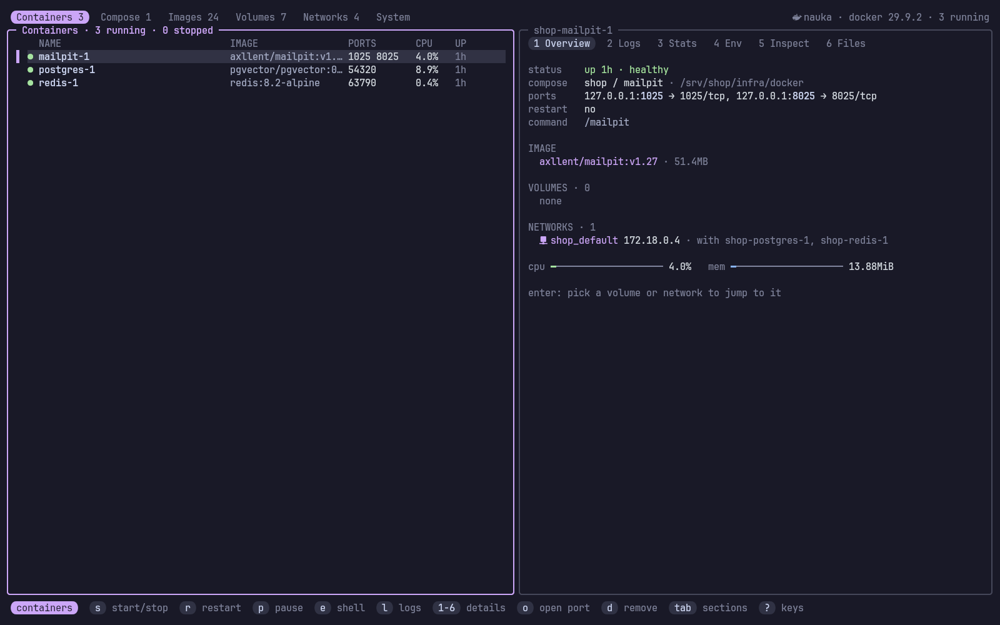
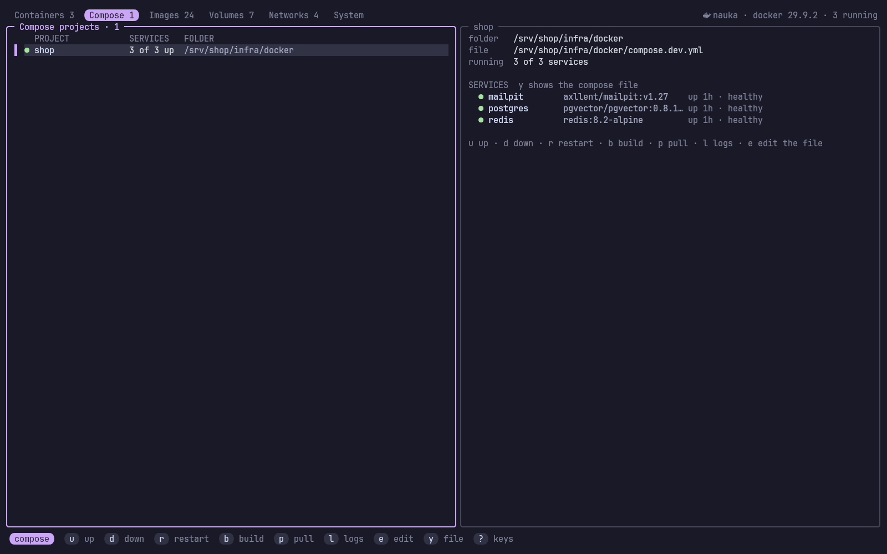

#nauka
Nauka (नौका) is Sanskrit for "boat": the boats your containers sail in.
Docker in the terminal: containers, compose projects, images, volumes, networks and disk use, with what's attached to what. Start, stop, open a shell, follow logs, bring a compose project up or down, prune, all from the keyboard.
nauka (नौका) is Sanskrit for a boat.
Containers 4 Compose 1 Images 15 Volumes 6 Networks 4 System nauka · docker 29.9.1 · 3 running
╭─ Containers · 3 running · 1 stopped ───────────╮╭─ onadssuper-postgres-1 ─────────────────────────╮
│ NAME IMAGE PORTS CPU │ │ 1 Overview 2 Logs 3 Stats 4 Env 5 Inspect │
│ ▌● postgres-1 pgvector/pgvector 54320 0.5%│ │ status up 25h · healthy │
│ ● redis-1 redis:8.2-alpine 63790 0.5%│ │ compose onadssuper / postgres │
│ ● mailpit-1 axllent/mailpit 8025 0.0%│ │ VOLUMES · 2 │
│ ○ aura-local redis:7-alpine exited│ │ onadssuper_postgres-data → /var/lib/... │
╰────────────────────────────────────────────────╯│ NETWORKS · 1 │
│ onadssuper_default 172.18.0.4 · with redis-1 │
containers s start/stop r restart p pause e shell l logs 1-6 details d remove ? keys


Screenshots use made-up demo data.
#Sections
Tab / Shift+Tab move between them. Each is a list on the left and the selected item's details on the right; Enter focuses the details, where Enter on a linked volume, network, image or container jumps to it in its own section, and Backspace comes back.
- Containers: state, image, published ports, CPU, uptime. The details have six tabs (
1–6):- Overview: status and health, compose project and service, ports, restart policy, command, the image, the volumes mounted (where, size, read-only or not, bind mounts too) and the networks it's on (its IP, and who else is there), with live CPU and memory.
- Logs: the last 500 lines, refreshed every 2 s, errors in red and warnings in yellow.
lfollows them full screen. - Stats: CPU, memory, network and disk I/O, processes.
- Env: the environment; values of secret-looking keys (password, token, key...) stay hidden until
v. - Inspect:
docker inspect, scrollable. - Files: browse the container's folders;
ccopies a file out to~/Downloads.
- Compose: every compose project (from its containers' labels), its services, folder and file.
uup,ddown,rrestart,bbuild,ppull,llogs of every service,eedit the file,yshow it. - Images: size, age, which containers use each; details show the entrypoint, exposed ports, declared volumes, tags, and
Hthe layers.rruns a container (asks for thedocker runoptions),ppulls a newer copy. - Volumes: size and the containers using each, anonymous ones marked.
fopens a shell in its files (in a throwaway alpine container),ncreates one. - Networks: driver, subnet, gateway and who's on it with their IPs.
cconnects a container,xdisconnects one,ncreates one. - System:
docker system df(what takes how much, what's reclaimable) andPto prune: stopped containers, dangling or unused images, unused volumes or networks, the build cache, or everything.
#Safe by default
Anything that deletes asks first and says what goes (a volume's size, the containers a down removes, how much a prune frees). A volume or image a container still uses isn't removed: nauka says which containers to remove first. Secrets in Env are hidden until you ask (Space u s).
#Keys
nauka uses the vim grammar every Vayu tool shares (vyakarana): in NORMAL, keys are commands and typing changes nothing; / starts INSERT to search (Esc goes back and keeps it). H / L switch sections, h / l move between the list and the details, dd removes (asks first; only y says yes). Space is the leader: press it and a box lists what can follow. Space c acts on a container, Space p on a compose project, Space i on an image, Space a creates, Space d removes or prunes, Space u toggles a view, Space y copies, Space t switches sections and details. Space Space searches every action, ? shows every key. Counts work (5j, 3gg).
Keys that moved say where they went for one release: on a container s → x, p → Space c p, e → Space c x, v → Space u s, c → Space y f; in Compose u → Space p u, p → Space p p, e → Space e c; on an image p → Space i p; on a volume f → Space o t, n → Space a v; on a network c → Space a c, x → Space d c, n → Space a n. r reloads now (restart is Space c r / Space p r, run an image Space i r), y copies the name (the compose file is Space u y), l focuses the details (logs are Space c l), H is the previous section (layers are Space u l). b (build) and P (prune) still work.
| Keys | What it does |
|---|---|
| j or Down | Move to the next row |
| k or Up | Move to the previous row |
| g g or Home | Jump to the first row (5gg: the fifth) |
| G or End | Jump to the last row (5G: the fifth) |
| Ctrl+d or PgDn | Scroll half a page down |
| Ctrl+u or PgUp | Scroll half a page up |
| / or Space f f | Search the list (filters it) |
| r or Space r | Reload everything now (it also reloads every 2 s) |
| ? or Space ? | Show every key of this view |
| q or Space q | Quit |
| Esc | Go back one step: clear the filter, then quit |
| L or Tab | Switch to the next section (Containers, Compose, Images, Volumes, Networks, System) |
| H or Shift+Tab | Switch to the previous section |
| l | Focus the details pane |
| h | Focus the list (leave the details pane) |
| Enter | Focus the details pane; in it, jump to the volume, network or container under the cursor |
| Backspace or Ctrl+o | Go back to where Enter jumped from (or up a folder in Files) |
| y or Space y n | Copy the name of the selected row |
| Space Space | Search every action and run one (the palette) |
| Space t | Tabs… |
| Space t c | Switch to Containers |
| Space t p | Switch to Compose |
| Space t i | Switch to Images |
| Space t v | Switch to Volumes |
| Space t n | Switch to Networks |
| Space t s | Switch to System |
| Space y | Copy… |
| Space y i | Copy the ID of the selected row |
| While typing | |
| Esc | Stop typing and keep the search (back to NORMAL) |
| Ctrl+j or Down | Move to the next row while typing |
| Ctrl+k or Up | Move to the previous row while typing |
Containers
| Keys | What it does |
|---|---|
| 1 or Space t o | Switch the details to Overview |
| 2 or Space t l | Switch the details to Logs |
| 3 or Space t a | Switch the details to Stats |
| 4 or Space t e | Switch the details to Env |
| 5 or Space t j | Switch the details to Inspect (the JSON) |
| 6 or Space t f | Switch the details to Files |
| x or Space c s | Start or stop the container |
| o or Space o b | Open the container's published port in the browser |
| d d or Space d d | Remove the container (asks first) |
| Space c | Container… |
| Space c r | Restart the container |
| Space c p | Pause or unpause the container |
| Space c l | Follow the container's logs full screen (Ctrl+c comes back) |
| Space c x or Space o t | Open a shell inside the container (bash, else sh) |
| Space u | Toggles… |
| Space u s | Toggle showing secret values in Env |
| Space y | Copy… |
| Space y f | Copy the selected file out of the container to ~/Downloads (Files) |
Compose
| Keys | What it does |
|---|---|
| Space e | Edit… |
| Space e c | Edit the compose file in $EDITOR |
| Space p | Compose project… |
| Space p u | Start the compose project (docker compose up -d) |
| Space p d or d d | Stop and remove the compose project's containers (docker compose down; asks first) |
| Space p r | Restart the compose project |
| Space p b or b | Build the compose project's images |
| Space p p | Pull the compose project's images |
| Space p l | Follow the logs of every service of the project |
| Space u | Toggles… |
| Space u y | Toggle the details between the services and the compose file |
Images
| Keys | What it does |
|---|---|
| d d or Space d d | Remove the image (asks first) |
| Space d | Delete… |
| Space d p or P | Remove dangling images (docker image prune; asks first) |
| Space i | Image… |
| Space i r | Run a container from the image (asks for the options) |
| Space i p | Pull a newer copy of the image |
| Space u | Toggles… |
| Space u l | Toggle the image's layers (docker history) |
Volumes
| Keys | What it does |
|---|---|
| d d or Space d d | Remove the volume (asks first; not while a container uses it) |
| Space a | Add… |
| Space a v | Create a volume |
| Space d | Delete… |
| Space d p or P | Remove unused volumes (docker volume prune; asks first) |
| Space o | Open… |
| Space o t | Open a shell in the volume's files (a throwaway alpine container) |
Networks
| Keys | What it does |
|---|---|
| d d or Space d d | Remove the network (asks first) |
| Space a | Add… |
| Space a c | Connect a container to the network |
| Space a n | Create a network |
| Space d | Delete… |
| Space d c | Disconnect a container from the network |
| Space d p or P | Remove unused networks (docker network prune; asks first) |
System
| Keys | What it does |
|---|---|
| Space d | Delete… |
| Space d P or P | Remove what you pick: stopped containers, images, volumes, networks, build cache, everything (asks first) |
#Install
Needs Linux and the docker command (with the compose plugin for the Compose section), and access to the daemon (the docker group, or rootless Docker). nauka runs the docker command for everything, so it follows your docker context exactly.
curl -fsSL https://raw.githubusercontent.com/Theyashsawarkar/nauka/main/install.sh | bashdownloads the release binary (or builds it with Go) into ~/.local/share/nauka and links ~/.local/bin/nauka. Or make install (PREFIX, DESTDIR), or go install github.com/Theyashsawarkar/nauka/cmd/nauka@latest.
#As a tmux plugin
set -g @plugin 'Theyashsawarkar/nauka'prefix D opens nauka in a popup; D inside closes it. Without nauka on your PATH, the plugin builds it with Go the first time.
| Option | Default | |
|---|---|---|
@nauka-key | D | the key after the prefix; none binds nothing |
@nauka-width / @nauka-height | 90% / 88% | popup size |
@nauka-title | nauka | popup title |
@nauka-launcher | your own popup command instead of display-popup; it gets display-popup's arguments (-E -d DIR -T TITLE CMD) |
To open it from a status-line click, open a popup that runs ~/.tmux/plugins/nauka/scripts/nauka-run.
#Colours
nauka follows varna's desktop theme (~/.local/state/varna/palette.json, a tools.nauka pick if the theme has one) and changes live with it; without varna it is Catppuccin Mocha. Icons need a Nerd Font; NO_NERD_FONT=1 turns them off.
#License
MIT